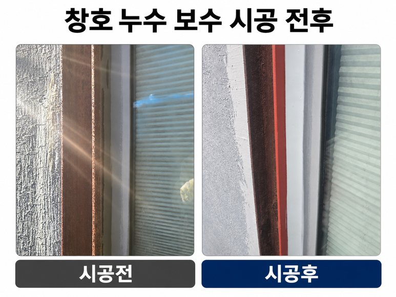
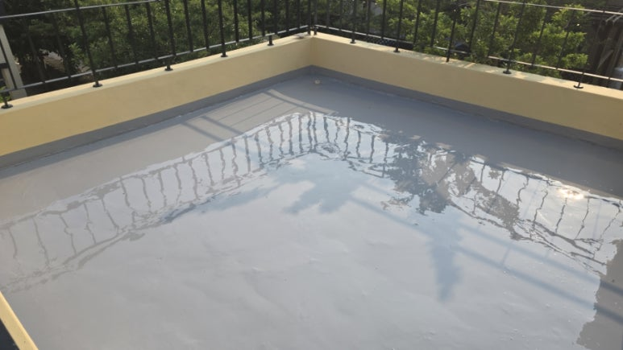
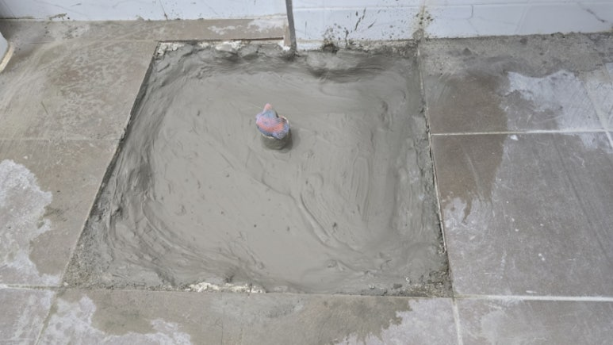
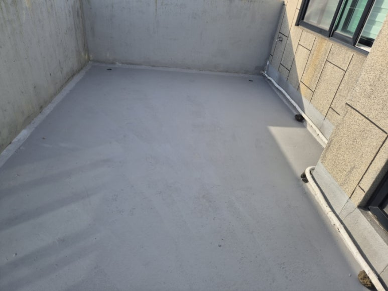
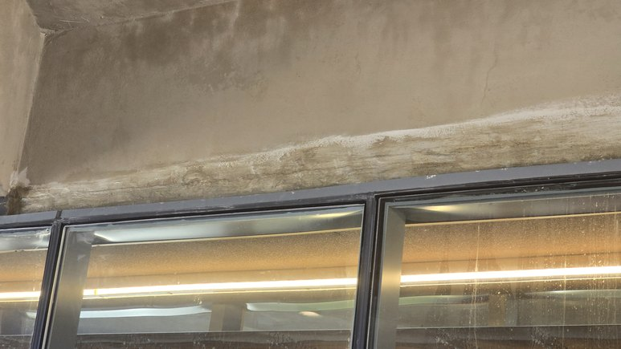
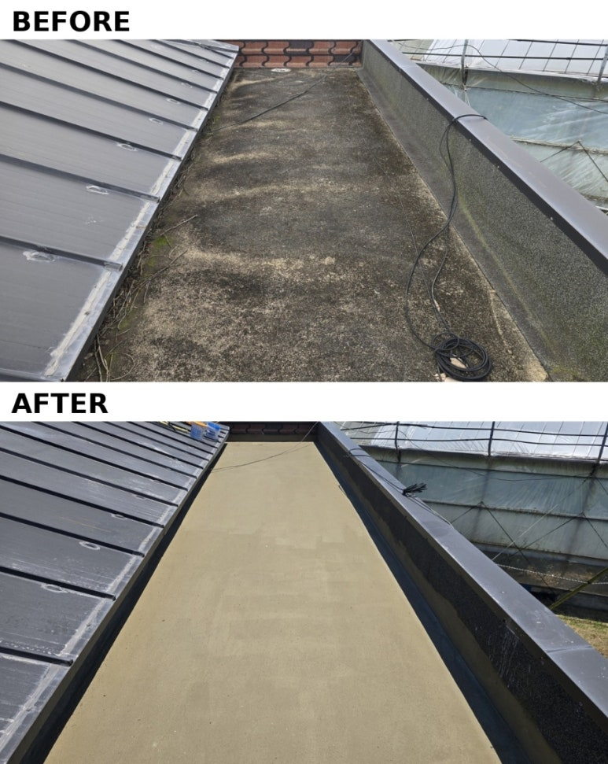
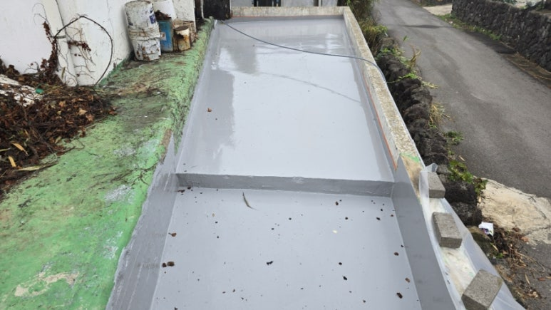
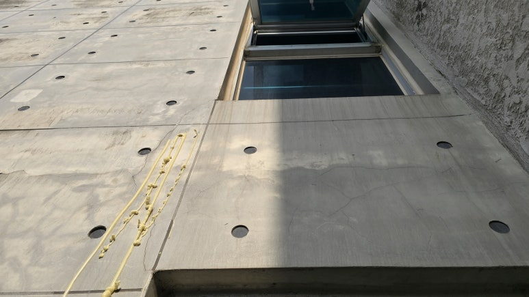

01
균열 · 조인트 인젝션
CRACK INJECTION
패커를 설치하고 균열 내부에 재료를 주입해 물길을 막습니다. 물이 흐르는 활수 상태는 발포형 우레탄으로 1차 차수한 뒤, 미세 누수는 저점도 재료로 마무리합니다. 지수 이후 단면의 일체성 회복이 필요한 구조균열은 에폭시 주입으로 이어서 검토합니다.

LEAK REPAIR & WATERPROOFING
물이 새는 자리와 들어온 자리는 다릅니다. 경로를 찾는 일에서 시작합니다.
주입 위치를 정하는 데 시간을 씁니다. 주입 자체는 그다음입니다.
지하주차장·지하벽·옹벽 같은 콘크리트 구조체 누수 보수에서 가장 많이 실패하는 이유는 물이 떨어지는 지점만 보고 주입하기 때문입니다. 슬래브 조인트, 관통 슬리브, 벽체 균열 등 유입 지점을 먼저 확인해야 재발을 줄일 수 있습니다. 제주도는 강우가 집중되는 시기가 뚜렷해, 우레탄 인젝션 이후 강우기 재확인까지 포함해 계획합니다.
FREQUENT QUESTIONS
METHOD
누수 상태(활수 여부), 부위 형상, 마감 조건에 따라 공법을 나눕니다.
01
CRACK INJECTION
패커를 설치하고 균열 내부에 재료를 주입해 물길을 막습니다. 물이 흐르는 활수 상태는 발포형 우레탄으로 1차 차수한 뒤, 미세 누수는 저점도 재료로 마무리합니다. 지수 이후 단면의 일체성 회복이 필요한 구조균열은 에폭시 주입으로 이어서 검토합니다.
02
BACK GROUTING
구조체 뒤쪽에 공극이 있는 경우 표면 주입만으로는 물길이 남습니다. 배면을 채워 유입 경로 자체를 줄입니다. 지하층·물탱크실 등에 적용합니다.
03
LIQUID RUBBER
이음매가 생기지 않아 드레인 주변, 파이프 관통부, 파라펫 코너처럼 형상이 복잡한 부위에 유리합니다. 함수율과 표면 강도를 확인한 뒤 시공하며, 보행부는 상부 보호층을 함께 계획합니다.

04
SURFACE RESTORATION
방수가 끝나도 주입 자국과 패커 흔적이 남으면 민원은 계속됩니다. 노출콘크리트 면보수 기술을 그대로 적용해 원래의 질감으로 정리합니다.
CHECK POINT
CASE 01
슬래브 균열과 시공 조인트를 따라 물이 떨어지고 백태가 생기는 현장.
CASE 02
벽면에 물자국이 번지고 도장이 들뜨는 현장. 옹벽 등 구조체 배면 지수를 함께 검토합니다.
CASE 03
기존 방수층 노후, 드레인 주변 균열로 아래층에 누수가 나타나는 현장.
CASE 04
상시 수압이 걸리는 구간으로, 재료 선정과 시공 순서가 특히 중요한 현장.
TECHNICAL NOTES
누수 경로 추적과 재료 선택의 판단 기준을 공정별로 정리했습니다.
LEAK REPAIR CASES
실제 현장의 누수보수·방수 기록입니다. 우레탄 인젝션을 적용한 현장과 옥상·창호·화장실 방수 현장이 함께 있으며, 각 사례에 적용한 공법을 요약에 적어 두었습니다.

BEFORE / AFTER철골조 창호 누수 보수 - 녹 부위 샌딩·방청·실리콘 재시공철골조에 설치한 창호에서 누수가 발생한 현장. 철골 녹이 팽창하며 실리콘이 파열된 부위의 녹을 샌딩하고 방청 처리한 뒤 실리콘을 다시 시공한 창호 누수보수 사례입니다.
BEFORE / AFTER옥상 탄성우레탄 방수 시공과정 - 바탕정리·하도·씰란트·중도옥상 바닥의 구배를 확인하고 바탕을 정리한 뒤 우레탄 하도, 씰란트, 탄성우레탄 중도 순서로 시공한 옥상 방수 사례입니다. 상도는 공정 설명으로 함께 정리했습니다.
BEFORE / AFTER화장실 바닥 누수 - 슬래브 관통부 보수와 지수 방수겉보기에는 멀쩡한 화장실에서 누수가 발생한 현장. 타일과 몰탈을 철거해 슬래브의 관통 구멍을 확인하고, 접착·고강도 보수몰탈·초급결 지수 처리와 담수시험 후 타일을 시공한 사례입니다.
BEFORE / AFTER타운하우스 평지붕 옥상누수 - 액체고무방수타운하우스 평지붕 옥상 누수 현장. 드레인 주변 구배와 파라펫·조인트 균열을 정리하고 초급결지수제와 크랙실란트로 보수한 뒤 침투성 액상고무방수와 탄성도막방수로 마감한 사례입니다.
BEFORE / AFTER알루미늄 창호 창틀 주변 누수 - 사춤 균열 보수알루미늄 창호의 창호 사춤 균열로 누수가 발생한 현장. 기존 바탕면을 제거하고 사춤면 주변에 초속경 방수제를 투입한 뒤 창틀 주변 도막방수와 코킹으로 마감하며 단계마다 살수 테스트를 한 사례입니다.
BEFORE / AFTER제주 성읍 구옥 옥상방수 - 연삭·드레인 보강·폴리머시멘트·탄성도막제주 성읍 구옥의 노후 옥상을 연삭, CX-1 드레인 주변 보강, 폴리머시멘트 방수, 탄성도막방수 순서로 시공하고 창틀 하부 균열부에는 우레탄 인젝션을 적용한 사례입니다.
BEFORE / AFTER40년 된 구옥 옥상 누수 - 폐콘 철거 후 우레탄방수준공 40년 된 구옥의 증축 옥상에서 누수 원인이던 폐콘 채움층을 철거하고, 메쉬 보강과 우레탄 하도·실란트·중도·상도로 방수했으며 하부에서는 우레탄 인젝션도 적용한 사례입니다.
BEFORE / AFTER외벽 사인장균열 누수 - 우레탄 인젝션과 균열·박락 마감 보수노출콘크리트 외벽 개구부 하부의 사인장균열(사선균열)을 따라 누수가 진행된 현장. 우레탄 인젝션으로 관통 균열을 충진하고, 인젝션 패커 제거 후 균열·박락 부위를 크랙실란트와 보수몰탈로 마감 보수한 사례입니다.SURFACE RESTORATION
방수 뒤 남은 주입 자국과 패커 흔적을 정리하는 마감 복원은 노출콘크리트 면보수와 같은 기술입니다. 그 결과를 시공 전후 사진으로 확인하실 수 있습니다.
 BEFORE / AFTER성수동 의류매장 인테리어 피처월 No.2 - Vintage Feature Wall성수동 의류매장 피처월 구간에서 이전 마감재가 뜯겨 나간 얼룩진 콘크리트 벽체와 기둥을 노출콘크리트 면보수재 콘채로 정리하고, 에이징 패턴과 코팅 마감으로 빈티지 노출콘크리트 분위기를 만든 사례. 시공 전 8장·시공 후 7장의 현장 사진.
BEFORE / AFTER성수동 의류매장 인테리어 피처월 No.2 - Vintage Feature Wall성수동 의류매장 피처월 구간에서 이전 마감재가 뜯겨 나간 얼룩진 콘크리트 벽체와 기둥을 노출콘크리트 면보수재 콘채로 정리하고, 에이징 패턴과 코팅 마감으로 빈티지 노출콘크리트 분위기를 만든 사례. 시공 전 8장·시공 후 7장의 현장 사진. BEFORE / AFTER계단의 빈티지느낌의 노출콘크리트기존 콘크리트 계단의 불균일한 표면과 파손 부위를 면정리하고, 계단 측면·하부를 노출콘크리트 면보수재 콘채와 콘채 퍼티로 보정해 빈티지 콘크리트 질감으로 마감한 사례. 시공 전 6장·시공 후 7장의 현장 사진과 전후 비교 이미지.
BEFORE / AFTER계단의 빈티지느낌의 노출콘크리트기존 콘크리트 계단의 불균일한 표면과 파손 부위를 면정리하고, 계단 측면·하부를 노출콘크리트 면보수재 콘채와 콘채 퍼티로 보정해 빈티지 콘크리트 질감으로 마감한 사례. 시공 전 6장·시공 후 7장의 현장 사진과 전후 비교 이미지. BEFORE / AFTER성수동 의류매장 인테리어 피처월 No.1 - Vintage Feature Wall성수동 의류매장 인테리어 피처월의 콘크리트 개구부 주변 파손 부위와 불균일한 표면을 노출콘크리트 면보수재 콘채로 면정리하고 기존 콘크리트와 이어지는 질감으로 복원한 사례. 시공 전 3장·시공 후 3장의 현장 사진.
BEFORE / AFTER성수동 의류매장 인테리어 피처월 No.1 - Vintage Feature Wall성수동 의류매장 인테리어 피처월의 콘크리트 개구부 주변 파손 부위와 불균일한 표면을 노출콘크리트 면보수재 콘채로 면정리하고 기존 콘크리트와 이어지는 질감으로 복원한 사례. 시공 전 3장·시공 후 3장의 현장 사진.